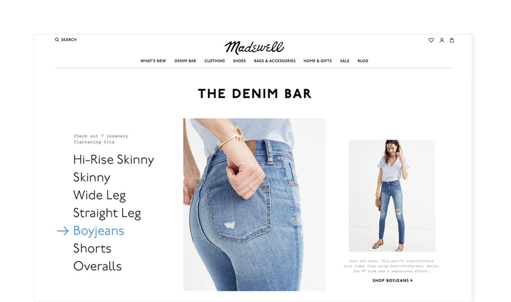
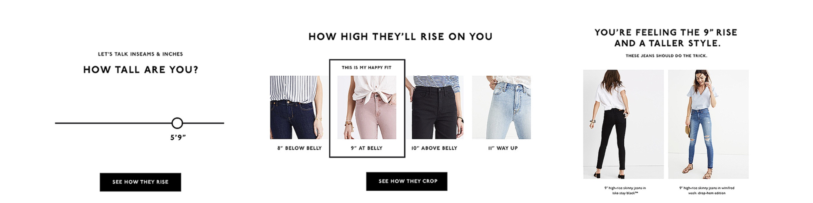
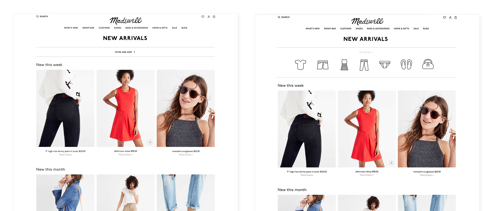

Madewell
Creative Concepts.
A reimagining of the Madewell e-commerce experience — pulling the brand’s Americana craft into the surface itself, and treating product discovery as editorial, not catalog.
Make discovery feel like the brand.
Madewell is a denim and lifestyle brand built around an Americana craft ethos — its retail spaces feel curated, hand-made, deliberate. The existing e-commerce surface looked nothing like that. It looked like every other catalog.
The brief was to imagine a Madewell.com that translated the brand’s editorial sensibility into product discovery, navigation, and the moment of pairing.

Catalog as editorial.
The proposed experience treats the product grid as a magazine spread — large imagery, generous space, intentional pacing. Hover and tap reveal product detail without yanking users out of context. Categorization becomes mood-driven rather than purely taxonomic.



A nav that doesn’t hide the brand.
The top navigation was redesigned to behave more like a magazine’s table of contents than a retail menu — letting the brand voice come through even at the moment of orientation.


Story alongside product.
Editorial content lives in-line with the catalog — stories about the people, places, and process behind the clothes, surfaced where they actually influence consideration.


A direction, not a launch.
The work was a concept exploration — not all of it shipped, but several patterns from this exploration influenced the direction of subsequent Madewell.com iterations.